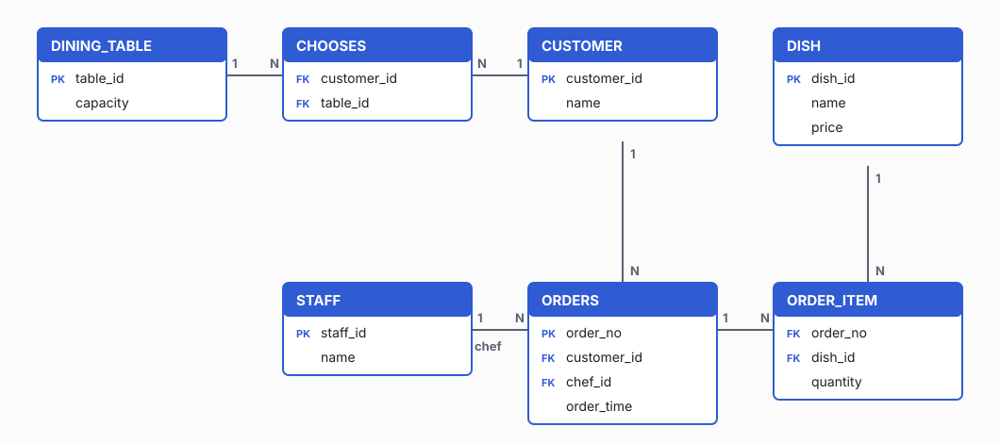
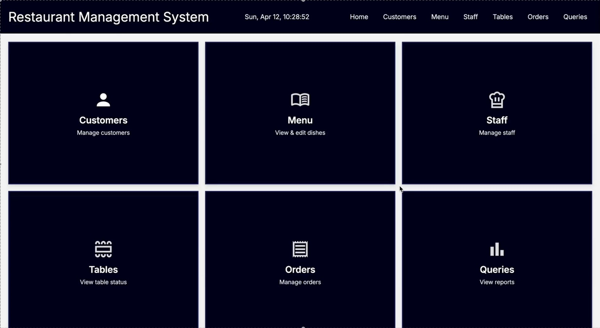
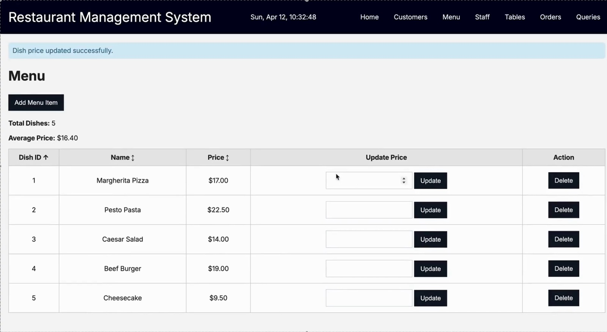
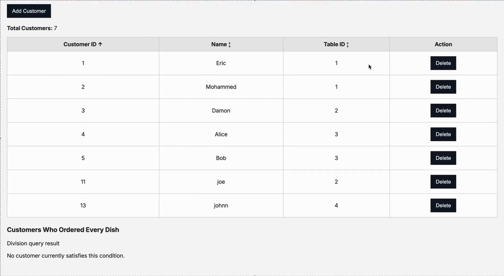

Database design · Team leadership
Restaurant Management System
A web app backed by a MySQL database that helps a restaurant keep track of its customers and tables, its menu and prices, its staff, and every order. I built it with three teammates for Database Systems I. I led the team, helped design the database, and produced our demo video.
Our implementation demo, which I recorded and narrated. It walks through the app and the code behind each page.
- Skills
- Database design, SQL, team leadership
- Tools
- MySQL, Python (Flask), HTML/CSS, GitHub
- Project type
- Course project, Database Systems I
- Timeline
- January – April 2026
- Team
- 4 students
- My role
- Team lead, main presenter, database design, demo video
The problem
A restaurant runs on information that changes all day: who is sitting at which table, what's on the menu and what it costs, who is working, and which orders are open. When that information is scattered, staff waste time and mistakes slip through. Our goal was to design one database that keeps all of it connected and consistent, and to build a simple app on top of it so the data could actually be used.
My role
Besides building, I kept the four of us organized:
- I scheduled our weekly meetings and set deadlines for each part of the work.
- I kept a running list of what was finished and what was still open, so nothing fell through the cracks.
- I was our main speaker in meetings and in the final presentation.
- I contributed ideas and calculations to the database design and wrote part of the database code.
- I recorded and put together our demo video.
Designing the database
We started by listing what the restaurant needed to track, then turned that list into tables and relationships. We ended up with seven tables:
- CUSTOMER and DINING_TABLE, linked through CHOOSES, which records which table each customer is seated at.
- DISH holds the menu: each dish's name and price.
- STAFF holds employees. Each order points to the chef who cooks it.
- ORDERS records who ordered, when, and which chef. ORDER_ITEM lists the dishes and quantities in each order, so one order can hold several dishes.

Building the app
The app has a home dashboard with six sections: Customers, Menu, Staff, Tables, Orders and Queries. Each section lists its records in a table you can sort by clicking a column header, and lets you add, update or delete records.


Challenges
Letting users sort safely. We wanted every list to be sortable by any column. The easy way is to paste the column name from the web address straight into the SQL query, but that would let someone inject their own SQL. Instead, each page only accepts column names from a fixed list, and anything else falls back to a safe default.
Answering harder questions. The Queries section goes beyond simple lists. One query joins five tables to show each order with its customer, dish and chef. Another finds "customers who ordered every dish," which SQL has no direct command for. We wrote it as a double NOT EXISTS: a customer qualifies only if there is no dish they haven't ordered. Getting that logic right took several tries.
Keeping four people in sync. With four schedules and one shared database design, a change in one table could break someone else's page. Weekly meetings and a shared list of open tasks helped us catch those conflicts early instead of the night before the deadline.

Outcome
We delivered a working app on a seven-table MySQL database. It supports adding, editing, deleting and sorting records across customers, tables, menu, staff and orders, and has a reports page with join, division and aggregate queries. I presented it in the demo video above.
Reflection
This project taught me that most of the work in a database happens before any code is written. Every time we had to change a table later, it rippled into several pages, so a few extra hours on the design up front would have saved us more time than that. I also learned that leading a team is mostly about making progress visible: once everyone could see what was done and what wasn't, the meetings got shorter and the work got more even.
Next time I would test with more realistic sample data from the start, so queries like "ordered every dish" show a meaningful result. I would also add input checks with clear error messages, so a typo in a price or ID doesn't reach the database.